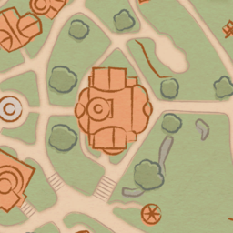
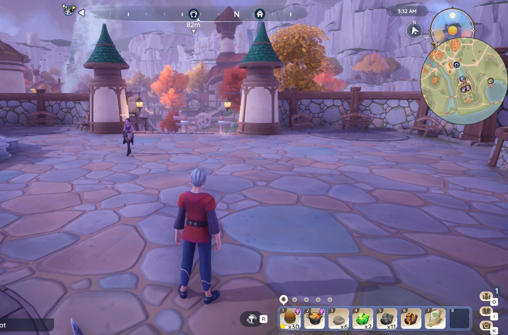
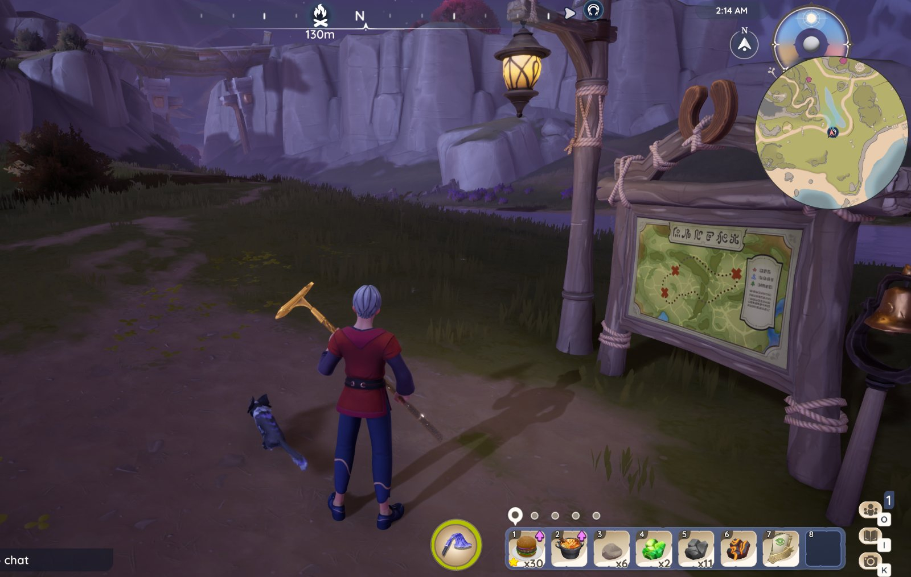
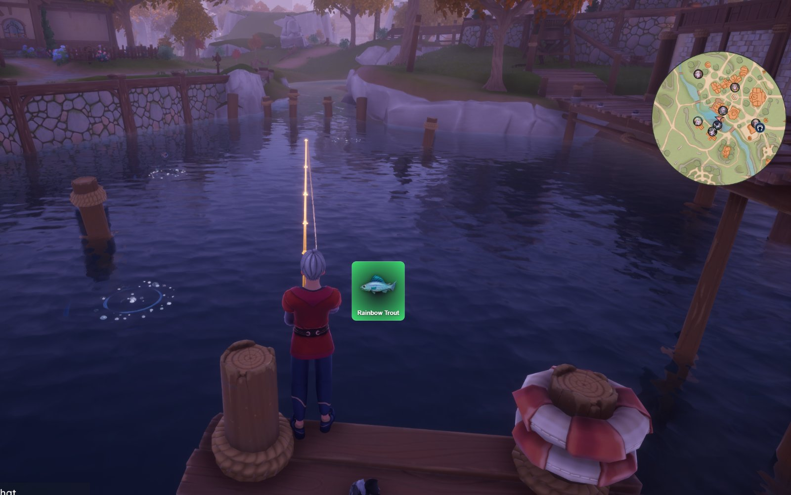
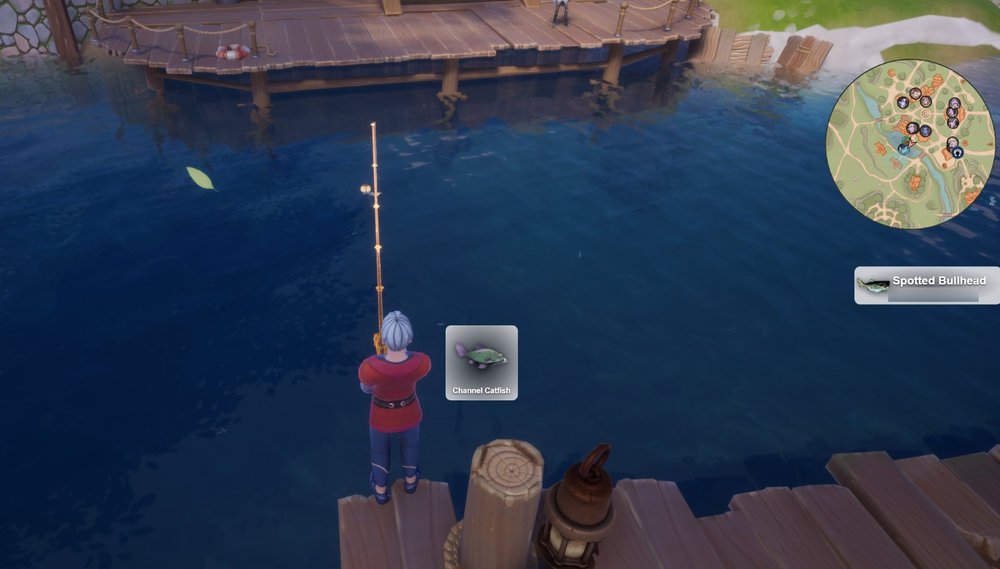
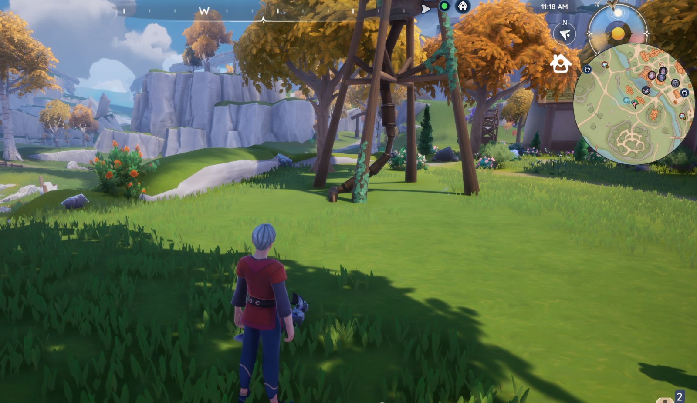
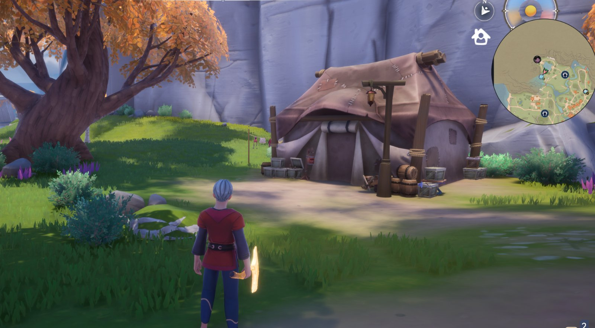
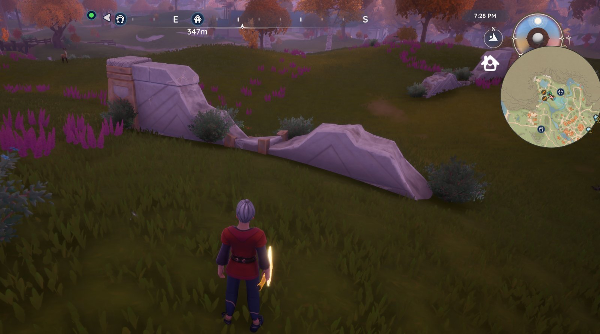
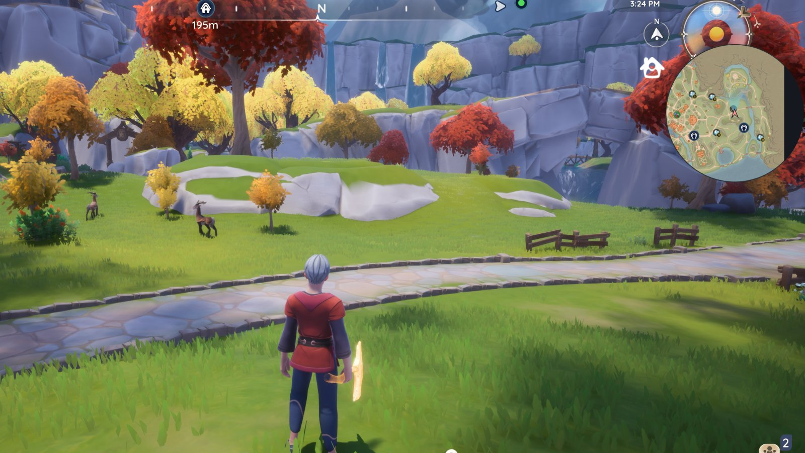

Minimap
A round minimap shows the zone around you and the direction that you look.
It shows villagers, stables and the members of your party.

A free minimap overlay for Palia
Read the information on the Discord server before you download.
A round minimap shows the zone around you and the direction that you look.
It shows villagers, stables and the members of your party.
When you hook a fish, Toshalia shows its name and rarity.
It can also show the fish of your party and of players near you.
Ore, trees, forageables, bugs and animals show on the minimap.
You select the types to show. You can also select Infected or Amber types.








All editions are free. You can change to a different edition at any time. Your settings stay on your computer between installs. When you uninstall Toshalia, you can select to delete them.
| Edition | Minimap | Fishing | Resources |
|---|---|---|---|
| Minimap | Yes | - | - |
| Fishing | Yes | Yes | - |
| Full | Yes | Yes | Yes |
Toshalia is not made by, or connected to, Singularity 6 or any other company with ownership or rights to Palia property. It is not approved by Singularity 6. It is a third-party tool. It is not technically allowed by the Palia terms of service. You use it at your own risk.